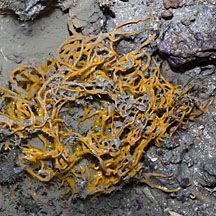
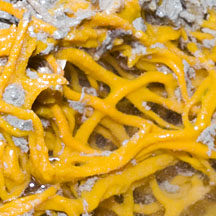
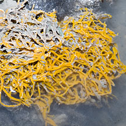

|
|
| sponges text index | photo index |
| Phylum Porifera |
| 'Roti
jala' sponge Terpios sp.* Family Suberitidae updated Oct 2016 Where seen? This bright orange jumble of tangled string-like sponge does indeed resemble a local favourite Roti Jala. It is sometimes seen on Beting Bronok. Features: Bright orange long skinny strings about 0.2cm in diameter, in a tangled jumble that may be 20cm wide. On rubbly areas or tangled on other encrusting organisms. Although the surface may appear smooth, it is rather rough. The strings are fragile. |
 Beting Bronok, Jul 13 |
 Beting Bronok, Jul 13 |
 Beting Bronok, Jul 13 |
*Sponge species are difficult to positively identify without close examination.
On this website, they are grouped by external features for convenience of display.
| 'Roti jala' sponges on Singapore shores |
On wildsingapore
flickr
|
| Other sightings on Singapore shores |
|
References
|